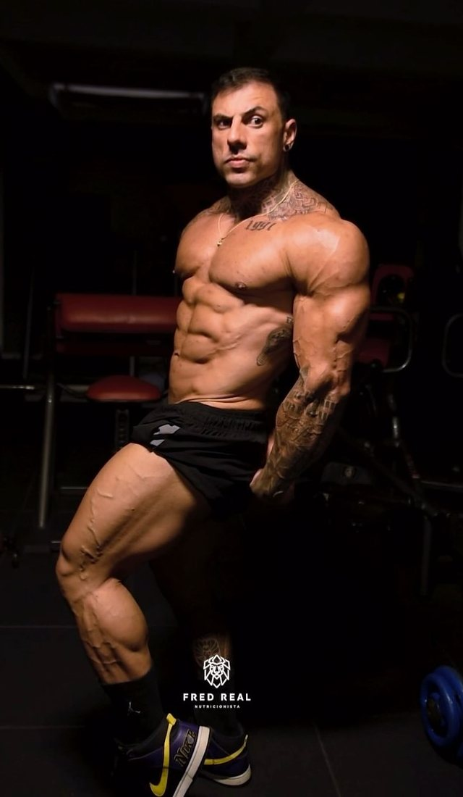
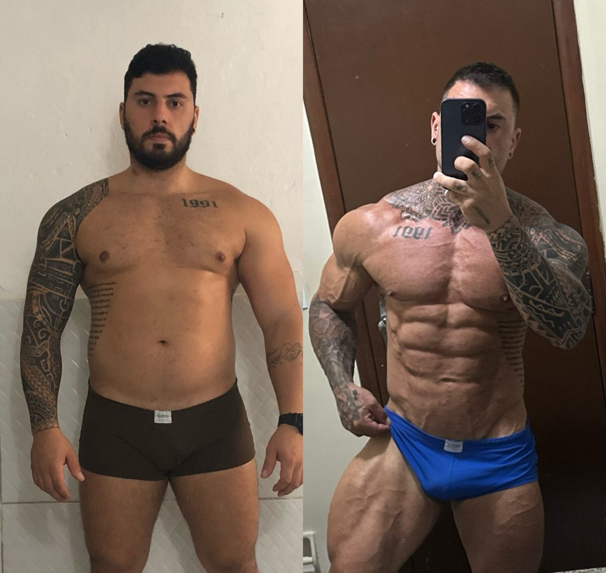

Consulta sem pressa
A primeira consulta dura de 45 a 90 minutos. O Fred quer saber da sua rotina, do seu treino, do que você gosta (e não gosta) de comer e de onde você costuma travar.
Nove perguntas sobre o seu objetivo, a sua rotina e o seu histórico. No fim, você recebe os pontos que mais pesam no seu caso e o plano indicado pra você, sem dieta milagrosa.
Começar o diagnósticoLeva cerca de 3 minutos.

Nutricionista desde 2019 · +15 anos de musculação · Presencial em Cordeiro e Nova Friburgo · Online para todo o Brasil
Você printa a dieta da blogueira, salva o vídeo do "shape em 30 dias" e aquela lista de alimentos proibidos. Um mês depois, nada disso saiu da galeria.
O acompanhamento com o Fred junta tudo num lugar só: um plano feito para você, explicado em linguagem simples, e alguém do seu lado para ajustar o caminho.
Você treina, faz dieta e não vê resultado nenhum no espelho.
Começa a dieta na segunda e na quarta já largou.
Você não quer passar fome nem parar de comer o que gosta.
Cada vídeo da internet fala uma coisa, e você não sabe em quem acreditar.
Já tentou de tudo e dá um desânimo só de pensar em começar de novo.
um plano feito para a sua rotina, alguém que explique o porquê de cada escolha e acompanhamento para não largar no meio.
Já briguei com a balança, com o espelho e com dieta que eu não conseguia manter. Sei bem como é se esforçar, não ver resultado e não entender o porquê. Foi isso que me levou a estudar Nutrição.
Sou nutricionista desde 2019, especializado na prática em nutrição esportiva, e treino musculação há mais de 15 anos. Também estou concluindo a graduação em Educação Física.
Meu atendimento é direto, descontraído e sem complicação. Você vai rir, vai entender e vai sair sabendo exatamente o que fazer.
"Meu papel não é lhe entregar um cardápio, e sim transformar sua vida."

AntesHojeA primeira consulta dura de 45 a 90 minutos. O Fred quer saber da sua rotina, do seu treino, do que você gosta (e não gosta) de comer e de onde você costuma travar.
No presencial, avaliação de composição corporal por bioimpedância. No online, a evolução é acompanhada por fotos e informações que você envia, respeitando os limites desse método.
Nada de papel pronto. O plano é construído durante a consulta, com a sua participação, em cima da sua rotina e das suas preferências. Se não cabe na sua vida, não serve.
Linguagem simples, sem termo técnico desnecessário. "Meu objetivo é fazer você compreender, e não impressionar." Você sai sabendo o que fazer e por quê.
O Fred avalia se você precisa de algum suplemento. Se precisar, explica qual e por quê. Se não precisar, não precisa. Suplemento é complemento, e não atalho.
Retornos geralmente a cada 30 a 40 dias, com reavaliação e ajuste do plano. E se precisar mudar algo antes, a dieta também pode ser ajustada entre as consultas.
Bateu a dúvida no mercado, no restaurante ou no fim de semana? Você tem contato direto com o Fred para tirar dúvidas do acompanhamento. Você não fica sozinho depois da consulta.
E no presencial, a primeira consulta ainda vem com uma garrafa de água de cortesia. 💧
Fazer meu diagnósticoNove perguntas rápidas e você descobre o que mais pesa no seu caso e qual plano é o mais indicado.
Ele mesmo responde no WhatsApp, entende o seu objetivo e explica como funciona o acompanhamento e os planos.
Decidiu? A secretária agenda a sua consulta e te orienta sobre o pagamento. A partir daí, é você e o Fred no mesmo time.
Resultado não vem de uma semana perfeita. Vem de meses fazendo o possível com constância. Por isso o acompanhamento tem retorno marcado, ajuste quando a vida muda e alguém cobrando (com carinho) do outro lado.
Nove perguntas sobre o seu objetivo, a sua rotina e o seu histórico. No fim, você vê os pontos que mais pesam no seu caso e o plano que faz mais sentido, sem dieta milagrosa.
SEU DIAGNÓSTICO
Abre o WhatsApp com as suas respostas já escritas. Você só aperta enviar.
Todos os planos têm a mesma consulta completa e o mesmo cuidado. A diferença é por quanto tempo o Fred caminha junto com você.
Uma dieta pronta te entrega um papel. O acompanhamento te entrega um caminho.
No semestral, você tem tempo para construir hábito, passar pelos fins de semana, pelas festas e pelas semanas difíceis com alguém ajustando o plano do seu lado.
E é o plano em que cada consulta sai mais em conta.
Formas de pagamento: PIX, cartão de crédito, cartão de débito e dinheiro. Condições de parcelamento confirmadas no fechamento.
Quero o plano semestralPara quem é de Cordeiro, Nova Friburgo e cidades próximas e quer a consulta olho no olho.
Consulta por vídeo, ao vivo, de onde você estiver. O mesmo cuidado, sem sair de casa.
Quando o chuveiro queima, você chama alguém que entende do assunto, né? Com o seu corpo é a mesma lógica. Informação tem de sobra; o problema é que ela é genérica, e você não é. No acompanhamento, a informação vira estratégia para a sua rotina, o seu treino e o seu histórico, e alguém ajusta o caminho quando a vida muda.
Entendo. Mas compare o que está incluso: consultas periódicas, um plano feito para você, ajustes ao longo do processo e contato direto com o Fred. Tem plano semestral, trimestral e consulta avulsa, com pagamento no PIX, cartão de crédito, débito ou dinheiro. Chama o Fred que vocês veem juntos o que faz sentido para o seu momento.
Não. A dieta é construída junto com você e leva em conta as suas preferências. Restrição desnecessária é o caminho mais rápido para desistir, e o objetivo aqui é você conseguir manter.
Por isso mesmo a dieta tem que se adaptar à sua rotina, e não o contrário. O plano é montado em cima do seu horário de trabalho, de treino e do que é viável no seu dia a dia.
Porque você não vai receber um papel e ser deixado sozinho. A dieta é feita com você, cabe na sua vida, é explicada para você entender e tem retorno marcado, ajuste entre as consultas e WhatsApp direto. O primeiro passo não precisa ser perfeito, precisa ser possível.
Funciona. A consulta é ao vivo, por vídeo, e a dieta é montada com você durante a chamada. A evolução é acompanhada por fotos e informações que você envia (a bioimpedância é exclusiva do presencial), e as dúvidas são resolvidas pelo WhatsApp.
Só se fizer sentido para o seu caso. A suplementação é avaliada individualmente na consulta, quando pertinente.
Atende. O acompanhamento vai de quem está saindo do sedentarismo até quem treina pesado há anos. O plano parte de onde você está hoje.
Você conversa com o Fred pelo WhatsApp: ele explica o acompanhamento e os planos. Decidiu começar? A secretária agenda a sua consulta e te orienta sobre o pagamento.
Um plano feito para você, explicado em linguagem simples, com retorno, ajuste e WhatsApp direto. Do seu lado até o resultado aparecer.
Comece pelo diagnóstico grátis.
Em 3 minutos você sabe qual plano é o seu.
📍 Cordeiro e Friburgo · 💻 Online pro Brasil
Fazer meu diagnóstico FRED
Conquiste o shape dos seus sonhos.
FRED
Conquiste o shape dos seus sonhos.